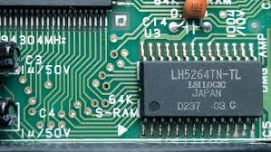

8 Kbytes of RAM
Experience seamless and responsive gameplay with 8 Kbytes of RAM. This power-efficient memory allows for complex game mechanics and smooth transitions, ensuring an uninterrupted gaming session.
Introducing the latest innovation in gaming technology - the Nintendo GameBoy. This groundbreaking handheld device redefines gaming with its blend of portability and performance. Now, you can enjoy immersive gaming experiences on the go.
With its sleek design and exceptional battery life, the GameBoy is set to become an essential for gamers everywhere. It's not just a device; it's the gateway to a world of iconic games like Tetris, Pokémon, and The Legend of Zelda, now in the palm of your hand.
Experience seamless and responsive gameplay with 8 Kbytes of RAM. This power-efficient memory allows for complex game mechanics and smooth transitions, ensuring an uninterrupted gaming session.
Immerse yourself in games with the GameBoy's high-contrast LCD screen. Its crisp black and white display brings your favorite games to life with stunning clarity and detail, even in bright sunlight.
Play longer and worry less with up to 30 hours of battery life! Whether you're commuting or on a long trip, the GameBoy is your enduring companion, keeping the fun going without constant recharging.